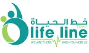
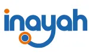

خدمات طبية شاملة
لرعايتك الكاملة
من الاستشارات التخصصية إلى رعاية الطوارئ — كل ذلك تحت سقف واحد، مع فريق يهتم بك بصدق.
أقسامنا الطبية
المميزة

طب النساء
رعاية صحية متخصصة للنساء تركز على الصحة الإنجابية ورعاية الحمل والتوازن الهرموني في كل مرحلة من مراحل الحياة.
أنف وأذن وحنجرة
رعاية متخصصة لحالات الأذن والأنف والحنجرة والرأس والرقبة — من فقدان السمع إلى التهاب الجيوب الأنفية المزمن واضطرابات الحلق.

جراحة العظام
رعاية متخصصة لحالات الجهاز العضلي الهيكلي بما في ذلك الكسور واضطرابات المفاصل والعمود الفقري لاستعادة الحركة.
الطب العام
خدمات رعاية صحية أولية شاملة لتشخيص وعلاج وإدارة مجموعة واسعة من الحالات الطبية برعاية شخصية.
مجموعة كاملة من
التخصصات الطبية
الطب العام
خدمات رعاية صحية أولية شاملة مصممة لتشخيص وعلاج وإدارة مجموعة واسعة من الحالات الطبية.
طب النساء
رعاية صحية متخصصة للنساء، تركز على الصحة الإنجابية ورعاية الحمل والتوازن الهرموني.
طب الأطفال
رعاية صحية متخصصة ورحيمة للرضع والأطفال والمراهقين في كل مرحلة من مراحل نموهم.
جراحة العظام
رعاية متخصصة لحالات الجهاز العضلي الهيكلي بما في ذلك الكسور واضطرابات المفاصل والعمود الفقري.
أنف وأذن وحنجرة
رعاية شاملة للأذن والأنف والحنجرة والهياكل المرتبطة بالرأس والرقبة.
طب العيون
رعاية متخصصة للرؤية وصحة العين، بما في ذلك خدمات التشخيص والعلاج لجميع الحالات.
الأمراض الجلدية والتجميل
علاجات البشرة والشعر والجمال بدءاً من الأمراض الجلدية السريرية وصولاً إلى الإجراءات التجميلية المتقدمة.
طب الأسنان
رعاية أسنان كاملة تشمل طب الأسنان الوقائي والترميمي والتجميلي لجميع أفراد الأسرة.
العلاج الطبيعي
علاج طبيعي قائم على الأدلة وإعادة تأهيل للتعافي من الإصابات وإدارة الألم وتحسين الحركة.
الأشعة
خدمات تصوير تشخيصي متقدمة تشمل الأشعة السينية والموجات فوق الصوتية وغيرها للتشخيص الدقيق وفي الوقت المناسب.
علم الأمراض / المختبر
خدمات مختبر تشخيصي داخل المركز توفر نتائج اختبار سريعة ودقيقة لدعم رحلتك الصحية.
الصيدلية
صيدلية داخلية توفر مجموعة واسعة من الأدوية الموصوفة والأدوية التي لا تحتاج إلى وصفة طبية، مما يضمن وصولاً سريعًا إلى علاجات آمنة وموثوقة لتلبية احتياجاتك الصحية.
خدمات الطوارئ
رعاية طوارئ سريعة الاستجابة متاحة خلال ساعات العمل — اتصل بنا فوراً على 511 841 52 971+.
بجانب الرعاية الطبية — خدمات إضافية
في مجموعة مترو الطبية، نذهب إلى ما هو أبعد من الرعاية الطبية لنقدم خدمات تجعل تجربتك سلسة ومريحة ومجزية.
بطاقة الامتياز
مزايا حصرية للأعضاء تشمل خصومات على الاستشارات والتحاليل والإحالات التخصصية.
مخيمات طبية مجانية
مخيمات صحية مجتمعية منتظمة تقدم فحوصات واستشارات وبرامج توعية صحية مجانية.
خدمات النبلاء
مساعدة شخصية للمرضى الذين يحتاجون إلى عناية خاصة أو زيارات منزلية أو دعم إضافي.
اتفاقيات الشركات
باقات صحية مخصصة للشركات لدعم صحة الموظفين وإنتاجيتهم.
مقدمو التأمين المعتمدون
نعمل مع أكثر من 15 شبكة تأمين لضمان تغطية رعايتك. اتصل بنا للتحقق من خطتك المحددة.



